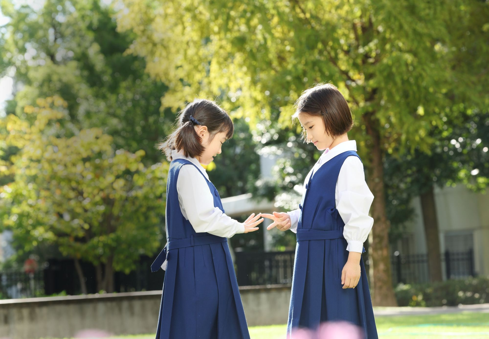
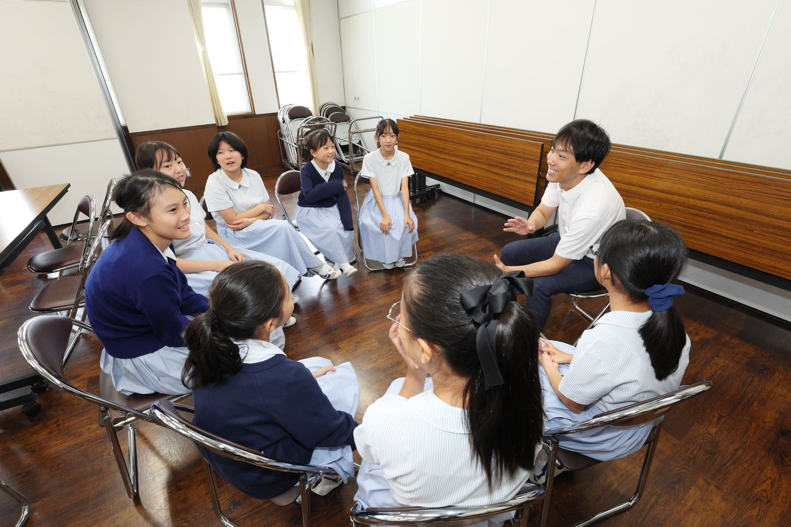
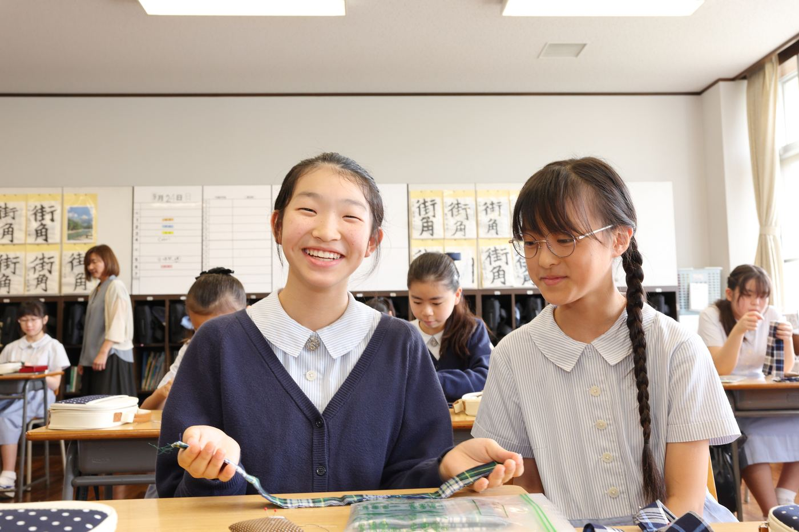
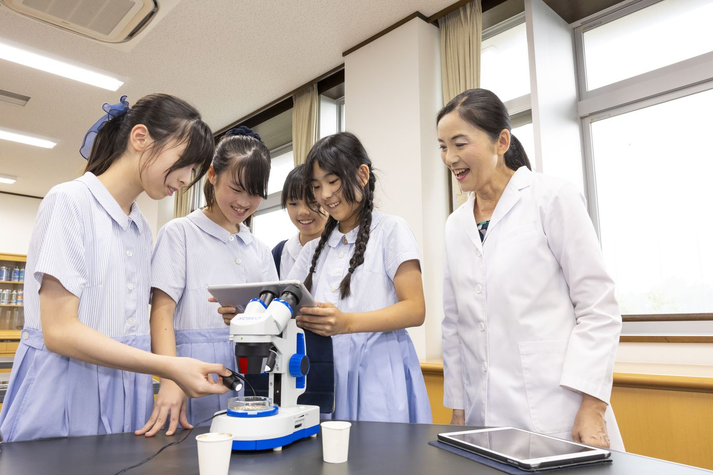
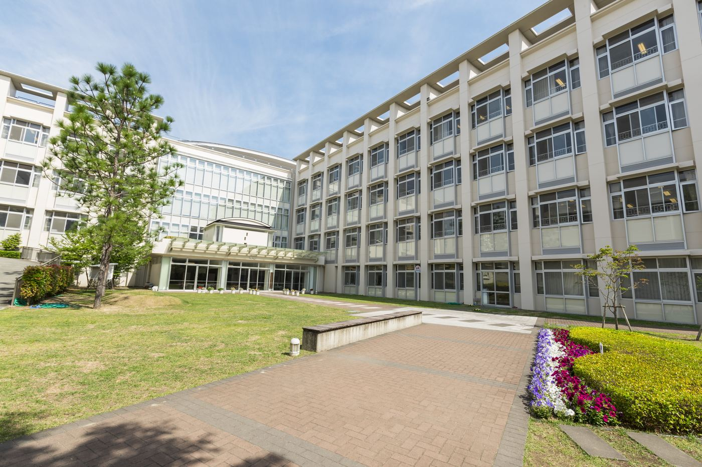
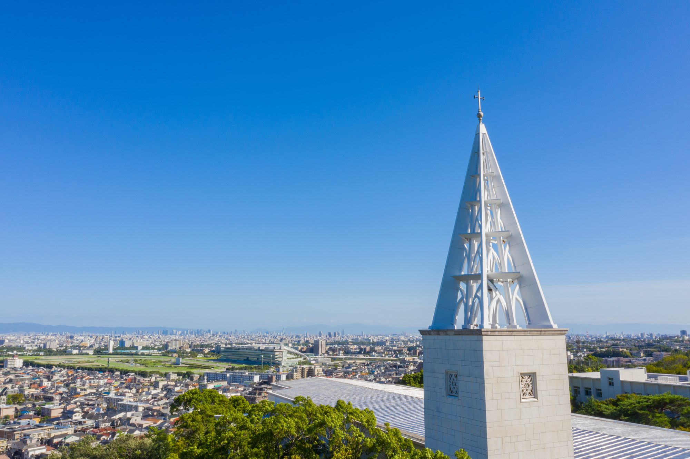

年中以下
早めに学校を
知っておきたい方へ
説明会の間、お子さまは本校の4年生・6年生と一緒に、松ぼっくりやどんぐりで工作をして過ごします。来年、再来年に向けて、学校の空気をご家族で感じてください。

Date
日時
2026年11月7日（土）
9:00〜11:00受付 8:30から
Place
会場
小林聖心女子学院小学校Dホールほか校舎内
For
対象
年中以下／年長／小学1年生〜5年生のお子さまとご家族
Apply
申込期間
10月1日（木）8:00から
11月6日（金）9:00まで定員 100組
要予約説明会のあと、ご希望の方は個別相談会・マイヤークラブ相談（11:00〜12:30）にも続けてご参加いただけます。
学校説明会のお申し込み画面の中で、続けてご予約いただけます。
For You
年中以下
説明会の間、お子さまは本校の4年生・6年生と一緒に、松ぼっくりやどんぐりで工作をして過ごします。来年、再来年に向けて、学校の空気をご家族で感じてください。
年長
対話型知能試験を、本番と同じ形で体験していただけます。体験のあと、評価のポイントと今後の流れをご説明します。
小学1年生〜5年生
転入試の説明会と体験（国語・算数）を行います。帰国生入試の説明会もあります。在校生から学校生活の様子もお話しします。
Our Wish
その思いは、私たち学校も同じです。
その答えを、
私たちは入試に込めました。
本校には、100年前に初代学院長マザー・マイヤーが残した言葉があります。「Big You, small i」。あなた（You）を大きく、わたし（i）を小さく書く言葉です。
本当の大きさは、自分のことばかり考えるところにはなく、人への寛容さや謙虚さ、人のために働くことの中にある。この言葉は、いまも本校のモットーとして大切にされています。

本校は、この言葉を核として、2027年度入試から、入試そのものを変えました。SQ対話型入試は、単なる選抜のための入試ではありません。お嬢様の中にある
「幸せを見つける力」
「幸せを人に伝えられる力」
の種を、私たち自身が見つけるための入試です。
見つけた種を、12年間でどう育てていくのか。なぜ今、この入試が必要だったのか。11月7日は、本校の教育理念とSQ対話型入試に込めた想いを、じっくりとお伝えいたします。
Come and See
パンフレットや
ホームページからわかること
来校してわかること
どちらも大切な判断の材料です。
パンフレットやホームページではお伝えしきれない部分を、11月7日に、ご自身の目で確かめてください。
Program
はじめに全員で
そのあと、お子さまの学年ごとに分かれます。
保護者の方が学校説明会に参加されている間、お子さまは本校の4年生・6年生と一緒に、松ぼっくりやどんぐりを使った工作をして過ごします。
説明会のあとは、作った作品をお子さまからご家族にご紹介します。6年生による学校紹介と、みんなで歌う時間もあります。
そのあと、4年生が案内する「OBAYASHIアートツアー」で、2階から4階までの図工作品を見ながら校舎をご案内します（ご予約は不要です）。
11/28のC日程入試を前に、入試体験を行います。対話型知能試験を、本番と同じ形で体験していただけます。
体験のあと、評価のポイントと今後の流れをご説明します。
ご希望の方は、そのあと「OBAYASHIアートツアー」にもご参加いただけます。
親子で学校説明会にご参加いただいたあと、転入試の説明会と体験（国語・算数）を行います。帰国生入試の説明会も行います。
在校生から、学校生活の様子もお話しします。
ご希望の方は、そのあと「OBAYASHIアートツアー」にもご参加いただけます。
学校説明会のお申し込み画面の中で、続けてご予約いただけます。
Three Things to See

01
廊下ですれ違うとき、みなさまを案内しているときの表情。写真ではわからない、学校の空気感がわかります。

02
先生はいつも子供たちのすぐそばで関わり、学習や生活をサポートしています。ご来校の際は、発表や案内の時間以外の、子供たちと先生のふとした関わりもぜひご覧ください。

03
4年生が案内する「OBAYASHIアートツアー」では、図工作品を見ながら校舎を歩きます。緑に囲まれた校舎で過ごす学びの環境を、ぜひ味わってください。
Voices / 12 Years Later
12年生（高校3年生）の保護者の方々に、振り返りを寄せていただいた手記より。
「不思議と、何の迷いもなくなりました。」
阪急小林駅の改札を出て、石畳の小道を進み、みこころ坂を登っていくと、歴史の重みを感じる校舎と、その手前にずっと続く美しい青々とした竹林が、私達を迎えてくれました。
駅から歩いて数分足らずで、こんなに厳かな世界があることに、とても驚き、感動したのを今もはっきり覚えています。更に坂道を登るにつれ、私はこの自然豊かな学校に娘を通わせたいと思うようになり、不思議と、何の迷いもなくなりました。
「自分の学校は、小林聖心以外に考えられない」
小学校受験の時、娘はあまりにも幼く無邪気で、受験させること自体に不安と葛藤がありました。けれど、いざ入学すると、先生方のきめ細やかなお心遣い、お優しい対応に、日に日に不安がなくなりました。
それは、小中高と学年が上がっていくごとに強い確信となり、娘も「自分の学校は小林聖心以外に考えられない」と、私たちの選択に感謝を伝えてくれる機会が何度もありました。
※ 個人の感想です。
Q & A
上履きは不要です。持ち物は、受付票（プリントアウト、またはスマートフォン等での画面表示）です。必要な方は水筒もお持ちください。
当日は、公共交通機関でのご来校をお願いしております。お車でのご来校は原則としてご遠慮いただいております。
学校説明会のお申し込み画面の中で、続けてお選びいただけますので、そちらからご予約ください。
本校の宗教教育は、人間の土台としての宗教教育です。お祈りや神様のことを学びますが、学問的なことよりも、「自分は愛されている」という自尊心を育てたり、自然を愛したり、感謝の心を学んだりすることを、大切にしています。信者でないご家庭の方が、ほとんどです。
ぜひ、お越しください。お子さまを支えてくださる方々が、本校の空気に触れてくださることを、私たちは大切にしています。
ご同伴いただけます。お気兼ねなく、ご家族でいらしてください。
本校までは、阪急今津線「小林（おばやし）」駅から徒歩7分です。大阪梅田駅から26分、神戸三宮駅から25分（乗り換え含む）、宝塚駅から6分です。通学の所要時間は1時間30分までとさせていただいています。1年生の入学直後は送迎から始まり、やがて地区ごとの集団下校へと、お子さまたちは自然に自立していきます。下校時は半年間、教員が小林駅までお送りします。
放課後児童クラブ「マイヤークラブ」がございます。学院敷地内のロザリオヒル教育施設で、宿題・おやつのあと、異学年のお友達と19時まで過ごせます。当日は、マイヤークラブ相談もご予約いただけます。
Information
ミライコンパスからお申し込みください。イベントの一覧から「2027年度 学校説明会（11/7）」をお選びください。
10月1日（木）8:00 から 11月6日（金）9:00 まで（定員100組）
持ち物は、受付票（プリントアウト、またはスマートフォン等での画面表示）です。必要な方は水筒をお持ちください。上履き・スリッパは不要です。
小林聖心女子学院小学校
〒665-0073 兵庫県宝塚市塔の町3-113
阪急今津線「小林（おばやし）」駅下車 徒歩7分
大阪梅田駅から26分／神戸三宮駅から25分／宝塚駅から6分

See You on November 7
ここまでお読みくださり、ありがとうございました。
11月7日の時間が、お子さまにとって、ご家族にとって、何かを受け取っていただける時間になればと願い、私たち教職員は準備をしております。お会いできるのを楽しみにしています。
お申し込みは 11月6日（金）9:00 まで